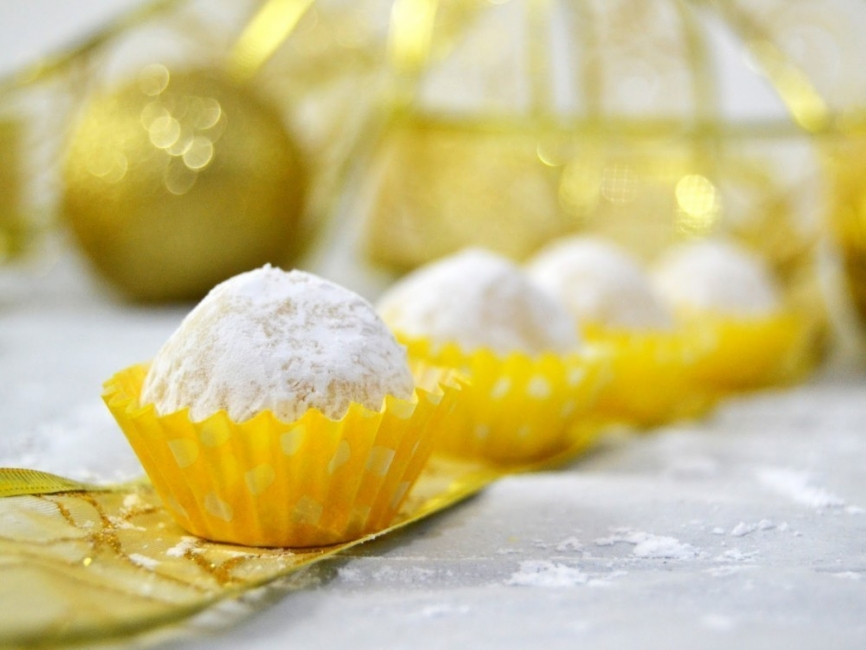

INGREDIENTES:
- 1/2 paquete de galletas de chocolate
- 1 pizaca de café
- Dulce de leche
- Chocolate blanco rallado
PROCEDIMIENTO Para preparar estas trufas, procesa las galletas de chocolate. Luego, mézclalas con una pizca de café y dulce de leche para unir. Arma con tus manos pequeñas bolitas y, cuando hayas terminado, pásalas por chocolate blanco rallado.